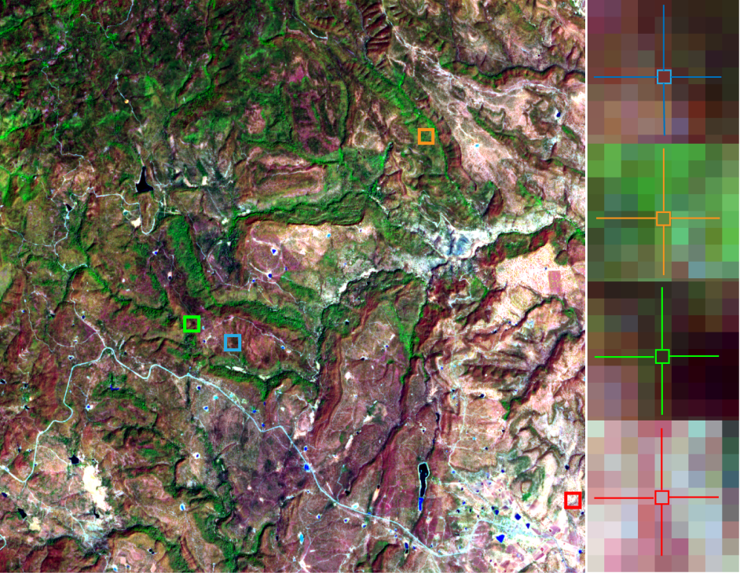
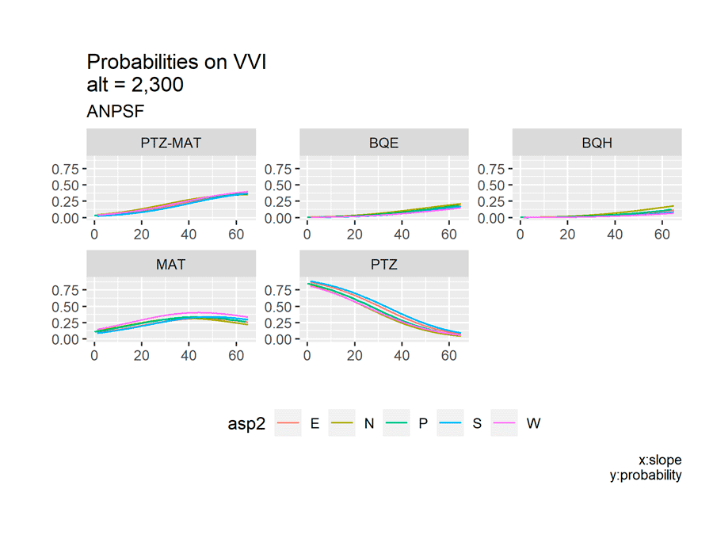

Influencia de la topografía en la distribución de las comunidades vegetales del Área Natural Protegida Sierra Fría en Aguascalientes, México.

Introducción
Sosa Ramírez et al menciona que existe
https://link.springer.com/chapter/10.1007/978-981-19-4200-6_8
1. Selección de imágenes
Tabla 1. Descripción de las bandas del sensor MSI.
| Número de banda | Longitud de onda central (nm) | Ancho de banda (nm) | Resolución espacial (m) |
|---|---|---|---|
| 1 | 442.7 | 20 | 60 |
| 2 | 492.7 | 65 | 10 |
| 3 | 559.8 | 35 | 10 |
| 4 | 664.6 | 30 | 10 |
| 5 | 704.1 | 14 | 20 |
| 6 | 740.5 | 14 | 20 |
| 7 | 782.8 | 19 | 20 |
| 8 | 832.8 | 105 | 10 |
| 8a | 864.7 | 21 | 20 |
| 9 | 945.1 | 19 | 60 |
| 10 | 1,373.5 | 29 | 60 |
| 11 | 1,613.7 | 90 | 20 |
| 12 | 2,202.4 | 174 | 20 |
https://sentinel.esa.int/web/sentinel/missions/sentinel-2
Escena descargada:
D:\Documents\GIS\IMG_SAT\S2A_MSIL1C_2023...\
2. Corrección atmosférica
Se utilizó el software QGIS para realizar el procedimiento de corrección atmosférica por el método de Dark Object Substraction (DOS) y para cada una de las bandas de la escena MSI. Previo a la corrección se hizo un recorte de la escena utilizando un polígono de formato shapefile.
https://ietresearch.onlinelibrary.wiley.com/doi/10.1049/iet-ipr.2017.0295
https://ietresearch.onlinelibrary.wiley.com/doi/10.1049/iet-ipr.2017.0295
https://link.springer.com/chapter/10.1007/978-981-13-9917-6_41
https://www.researchgate.net/publication/236769129_Image-Based_Atmospheric_Corrections_-_Revisited_and_Improved
http://cursosihlla.bdh.org.ar/ET_Local_Regional_2014/Clase_4/1_Teoria/Curso_ET_2014_Teorico_clase4.pdf
https://www.researchgate.net/publication/281667599_Effectiveness_of_DOS_Dark-Object_Subtraction_method_and_water_index_techniques_to_map_wetlands_in_a_rapidly_urbanising_megacity_with_Landsat_8_data
Polígono:
D:\Documents\GIS\IMG_SAT\S2A_MSIL1C_2023...43\ANPSF_2023_ZONA.shp
Salida:
D:\Documents\GIS\IMG_SAT\S2A_MSIL1C_2023...43\DOS_20230313\DOS_20230313
3. Corrección de iluminación por topografía
γi = cos θs cos ηi + sin θs sin ηi (φa - φo)
where γi is the incidence angle, θs is the solar zenith angle; ηi is the slope angle; Фa is the solar azimuth angle and Фo is the slope aspect. [9]👈 From the assessed methods, the C-correction and the empiric–statistic method gave the best results when analyzing the homogeneity of different land covers after correction. [10]👈 The C normalization belongs to a class of non-Lambertian methods [6]. It can be defined as:
ρH = ρT * [(cos θs + ck)÷(cos β + ck)] [11]👈
where k indicates the channel dependence, and ρT = ak + bk cosβ, and ak, bk are calculated from the regression equation of the terrain reflectance versus the local illumination angle (ck = bk/ak). This approach avoids the problems associated with small values of cosβ by adding the term ck in the denominator. The ck accounts for the diffuse radiance component if TOA reflectance data is used, and for residual effects in case of surface reflectance.
Se utilizó el software SAGA incluido en QGIS así como el Modelo de Elevación de Terreno (MET) para realizar el procedimiento de corrección de iluminación topográfica por el método de factor C aplicado a las bandas 3, 4, 8 y 11 de la escena MSI. El MET se obtuvo a través del Continuo de Elevaciones Mexicano (CEM) del Instituto de Geografíaa, Estadística e Informática (INEGI).
Se identificaron en el archivo de la imagen MSI los datos de valor medio del ángulo solar: ángulo cenital y ángulo azimutal (Tabla 2).
Tabla 2. Datos de orientación solar de la escena MSI.
| Ángulo cenital (°) | Ángulo azimutal (°) |
|---|---|
| 31.9443 | 138.7315 |
El valor del ángulo cenital se utilizó para obtener el ángulo de elevación solar como se indica a continuación:
sh = 90 - ca
donde:
sh: es el valor del ángulo de elevación solar.
ca: es el valor del ángulo cenital
Entonces, los valores de ángulo solar ingresados en SAGA para realizar la corrección de iluminación fueron el ángulo azimutal y el ángulo de elevación solar.
Finalmente, se ingresaron en SAGA los parámetros de corrección complementarios que se muestran en la Tabla 3.
Tabla 3. Parámetros para la corrección de iluminación por factor C.
| Banda | Max cells | Minnaert |
|---|---|---|
| 3 | 26 | 0.5 |
| 4 | 26 | 0.5 |
| 8 | 225 | 0.5 |
| 11 | 25 | 0.5 |
Como resultado se obtuvo una imagen mejorada con mayor contraste entre las coberturas presentes en la escena como se muestra en la Figura 1.

Figura 1. Composición de imagen multibanda RGB (11, 8, 3) de la escena Sentinel-2. (A) Imagen sin corrección de iluminación topográfica; (B) Imagen con iluminación topográfica corregida.
https://www.researchgate.net/publication/342323432_PLC-C_An_Integrated_Method_for_Sentinel-2_Topographic_and_Angular_Normalization
https://www.sciencedirect.com/science/article/abs/pii/S0303243411000584#preview-section-snippets
https://www.researchgate.net/publication/259275014_Topographic_correction_of_satellite_images_Theory_and_application
https://www.sciencedirect.com/science/article/abs/pii/S0303243411000584
https://www.sciencedirect.com/science/article/abs/pii/S0034425711000411
https://www.researchgate.net/publication/270895671_Review_of_Different_Topographic_Correction_Techniques_for_Satellite_Imagery
https://www.sciencedirect.com/science/article/pii/S0303243422000423
https://www.sciencedirect.com/science/article/pii/S0303243422000423#b0220
https://www.researchgate.net/publication/301677429_CORRECCION_TOPOGRAFICA_A_IMAGENES_LANDSAT_POR_CLASES_DE_PENDIENTE
https://www.researchgate.net/publication/361944391_Como_realizar_correcciones_topograficas_a_imagenes_satelitales_con_QGIS
Datos de elevación:
D:\Documents\GIS\AGS_ANPSF\ANPSF_2023\MED_20230313_ANPSF.tif
Salida:
D:\Documents\GIS\IMG_SAT\S2A_MSIL1C_2023...\C3_20230313\C_20230313_B0stack_raster.tif
4. Cálculo de índices de vegetación
Con los datos de la banda 4 (0.6646 µ), 8 (0.8328 µ) y 11 (1.6137 µ) se generaron dos índices de vegetación: a) el índice de Vegetación de Diferencias Normalizado (NDVI) y b) un Índice de Vigor Vegetal (IVV) que exprese la presencia de vegetación vigorosa en función de su verdor y de su contenido de agua simultáneamente. Los índices se construyeron utilizando las siguientes expresiones:
NDVI = (n - r) ÷ (n + r)
IVV = (n - r) s*√s + 0.3275 ÷ (n + r) s^2 - 1.422576
Donde:
n: banda infra-rojo cercano (b8).
r: banda rojo (b4)
s: banda infra rojo (bs).
La Figura 2 muestra la forma leptocúrtica de la distribución de los valores del NDVI, en contraste con la mayor amplitud que se observa en los valores del IVV.
Figura 2. En color naranja podemos observar el histograma con los datos del IVV con mayor amplitud y varianza que el NDVI en color azul.
La notoria diferencia en la distribución de los índices se manifiesta también en una mayor facilidad para diferenciar el tipo de coberturas presentes en el territorio observado. En la Figura 3 se muestran 4 firmas espectrales que corresponden a 4 puntos geográficos en la zona de estudio:
firma 1: vegetación arbórea en cañada.
firma 2: vegetación arbórea abierta.
firma 3: vegetación arbórea en cañada.
firma 4: pastizal-suelo desnudo.
Las firmas se construyeron con los datos de las bandas 4, 8 y 11 del MSI y, se agrega en la misma gráfica los valores del NDVI así como del IVV. Se observa que los valores del NDVI de las firmas 1 y 3 se encuentran más cercanos al valor NDVI de la firma 4. En contraste, los valores del IVV permiten discriminar mejor la cobertura de la firma 4 (que corresponde a pastizal-suelo desnudo) del resto de firmas que si presentan vegetación arbórea con algún nivel de verdor y humedad.
 Figura 3. Los valores del IVV permiten diferenciar mejor aquellas coberturas vegetales de las de suelo desnudo y pastizal.
https://www.mdpi.com/2072-4292/13/18/3550
https://www.bing.com/search?q=r+image%2C+sentinel+DOS+correction+atmospheric&qs=n&form=QBRE&sp=-1&lq=0&pq=r+image%2C+sentinel+dos+correction+atmospheric&sc=1-44&sk=&cvid=32410D588CFF48A4B8B0F6D8607F0AD1&ghsh=0&ghacc=0&ghpl=
https://www.researchgate.net/publication/327558326_Apuntes_de_Teledeteccion_Indices_de_vegetacion
https://geoinnova.org/blog-territorio/analisis-de-indices-de-vegetacion-en-teledeteccion/#Indice_GLI_Green_Leaf_Index
https://www.auravant.com/blog/agricultura-de-precision/indices-de-vegetacion-y-como-interpretarlos/
https://mappinggis.com/2020/07/los-6-indices-de-vegetacion-para-completar-el-ndvi/#SIPI_Indice_de_Pigmentacion_Insensible_a_la_Estructura
https://www.nv5geospatialsoftware.com/docs/vegetationindices.html
https://www.usgs.gov/special-topics/remote-sensing-phenology/science/vegetation-indices#:~:text=Vegetation%20Indices%20Remote%20sensing%20phenology%20studies%20use%20data,leaves%20strongly%20absorb%20wavelengths%20of%20visible%20%28red%29%20light
https://www.hindawi.com/journals/js/2017/1353691/
https://www.sciencedirect.com/topics/earth-and-planetary-sciences/vegetation-index
https://www.hindawi.com/journals/js/2017/1353691/
https://books.google.cl/books?id=Yb6xIldfoT0C&pg=PA105&lpg=PA105&dq=indices+de+vegetacion&source=bl&ots=oQCBrrEFZn&sig=NKgMPm82MtfImqfUDZU_HxGW9fw&hl=es&sa=X&ei=4wo-fvyJqiE2QXrnYH4DQ&ved=0CDYQ6AEwAQ#v=onepage&q=indices%20de%20vegetacion&f=false
Salida:
D:\Documents\GIS\IMG_SAT\S2A_MSIL1C_2023...\INDEX VVI

5. Clasificación por conglomerados
Clasificación k-means
Se trata de un algoritmo de clasificación iterativo en el que se definen n clases dentro de las que serán categorizados los elementos de un conjunto de observaciones. El mecanismo del ...algoritmo consiste en asignar n centroides aleatorios dentro del espacio muestral. Posteriormente se miden las "distancias" entre cada centroide y los puntos más cercanos de cada centroide, hecho esto, el algoritmo recalcula la posición de cada centroide en función de las distancias promedio y vuelve a calcular las distancias a los puntos desde la nueva posición de los centroides. Este proceso se repite de manera iterativa hasta que las posiciones de los centroides se estabilizan y los puntos dejan de cambiar de centroide como se muestra en la animación de la Figura 4. Fig 4. Representación animada del funcionamiento del algoritmo de
clasificación k-means.
Fig 4. Representación animada del funcionamiento del algoritmo de
clasificación k-means.
Una vez procesados los datos de radiación registrados desde la plataforma satelital Sentinel 2 a través del sensor MSI, se realizaron dos procesos de clasificación no supervisada, el primero sobre la imagen NDVI y otro sobre la imgen IVV obteniendo como resultado dos imágenes clasificadas:
a) clases NDVI
b) clases IVV
En el proceso se utilizó el algoritmo de clasificación por conglomerados k-means con los parámetros que a continuación se describen:
Número de clases: 3
Iteraciones: 50
Para determinar el número de clusters o clases, se siguió el método del "codo" en el que se calcula la suma de cuadrados con diferentes cantidades de clusters. Se selecciona el número de clusters a partir del cual la diferencia en las sumas de cuadrados comienza a ser menos significativa (Figura 5).
 Fig 5. Número óptimo de clases. En la gráfica izquierda podemos observar
que a partir de tres clusters la diferencia en las sumas de cuadrados se
estabiliza. En la gráfica derecha podemos ver que la suma de cuadrados alcanza un máximo
en tres antes de empezar a caer.
Fig 5. Número óptimo de clases. En la gráfica izquierda podemos observar
que a partir de tres clusters la diferencia en las sumas de cuadrados se
estabiliza. En la gráfica derecha podemos ver que la suma de cuadrados alcanza un máximo
en tres antes de empezar a caer.
La descripción de las clases obtenidas se muestran en la Tabla 5. Las cinco clases representan distintos tipos de cobertura vegetal en función del vigor vegetal relacionado con el verdor y con el contenido de humedad en la planta, aspectos que se expresan a través de la relaciones entre las bandas 4, 8 y 11.
Tabla 5. Descripción de las clases obtenidas por medio de la clasificación k-means.
| Clase | Conteo NDVI - IVV | Descripción | |
|---|---|---|---|
| PTZ | 190,071 | 131,281 | Pastizal |
| PTZ-MAT | 401,025 | 281,435 | Paztizal-matorral |
| MAT | 349,583 | 337,393 | Matorral |
| BQE | 159,918 | 264,003 | Bosque |
| BQH | 50,451 | 136,936 | Bosque húmedo |
A partir de las cinco clases o categorías obtenidas se calcularon las estadísticas por zona (clase) de los dos índices de vegetación (Tabla 4).
Tabla 4. Estadísticas de los índices de vegetación en cada clase o categoría obtenida.
| Clase | NDVI media-desv | IVV media-desv | ||
|---|---|---|---|---|
| PTZ | 0.1113 | 0.0144 | 0.3212 | 0.0286 |
| PTZ-MAT | 0.1415 | 0.0080 | 0.3959 | 0.0184 |
| MAT | 0.1683 | 0.0086 | 0.4531 | 0.0166 |
| BQE | 0.2036 | 0.0126 | 0.5128 | 0.0185 |
| BQH | 0.2600 | 0.0259 | 0.5830 | 0.0298 |
Se observa una mayor amplitud en los valores del IVV con respecto al NDVI, así como también una mayor varianza como resultado de introducir la información de la banda 11 y por la relación que tiene la presencia de humedad con la información de la banda 4 y 8.
Notamos que el conteo de pixeles identificados en cada clase difiere notablemente en los resultados de la clasificación a partir del NDVI y del IVV. En la clasificación NDVI hay un mayor conteo de pixeles en la categoría de Pastizal y un menor conteo en la categoría de Bosque vigor 2. Lo anterior podemos observarlo con claridad en la Figura 6.
 Fig 6. Clasificación obtenida a partir del índice NDVI
(arriba); clasificación a partir del IVV (abajo);
Al centro se muestra la composición multibanda en RGB (11,8,3)
de la imagen satelital Sentinel-2.
Fig 6. Clasificación obtenida a partir del índice NDVI
(arriba); clasificación a partir del IVV (abajo);
Al centro se muestra la composición multibanda en RGB (11,8,3)
de la imagen satelital Sentinel-2.En un primer análisis visual fotointerpretativo, los resultados de la clasificación hecha sobre el IVV parecen describir mejor las coberturas vegetales presentes en la zona de estudio. La clasificación NDVI detecta una mayor cantidad de pixeles dentro de las categorías de menor vigor, mientras que clasifica muy pocas zonas como Bosque húmedo. En contraste, la clasificación IVV clasifica una mayor cantidad de pixeles en las categorías de vegetación con mayor vigor.
https://www.ncbi.nlm.nih.gov/pmc/articles/PMC5148156/
https://macwright.com/2013/02/18/literate-jenks.html
https://stackoverflow.com/questions/54841674/plot-kmeans-clusters-and-classification-for-1-dimensional-data
https://www.dannyadam.com/blog/2019/07/kmeans1d-globally-optimal-efficient-1d-k-means/
https://pypi.org/project/kmeans1d/
https://arxiv.org/abs/1701.07204
https://www.scielo.org.mx/scielo.php?script=sci_arttext&pid=S1405-04712011000300004
Salida:
D:\Documents\GIS\IMG_SAT\S2A_MSIL1C_2023...\CLASSIFY_LANDCOVER\kmeans ivv.hdr
D:\Documents\GIS\IMG_SAT\S2A_MSIL1C_2023...\CLASSIFY_LANDCOVER\roi ivv to tif.tif
6. Evaluación de la clasificación con drones
🚧estamos trabajando🚧. 😃
Georreferenciación de imágenes.
-------------------
7. Análisis de regresión
Regresión logística multinomial
El análisis de regresión logística multinomial trabaja sobre una variable respuesta o dependiente de naturaleza categórica y, para este caso, con dos variabes predictivas: una continua (pendiente) y otra categórica (aspecto). La variable aspecto se particionó en 4 categorías: Norte, Sur, Este y Oeste. El análisis busca detectar si es que existe alguna influencia significativa de las variables topográficas sobre la distribución de las clases de vegetación.
Tabla 6. Resultados del modelo de regresión logística.
Coeficientes.
| Clase | Intercept | Slope | N | P | S | W |
|---|---|---|---|---|---|---|
| BQE | -0.5816 | 0.0173 | -0.0689 | 0.1100 | -0.1057 | -0.3733 |
| BQH | -1.3832 | 0.0249 | 0.0297 | 0.2910 | -0.2037 | -0.8834 |
| MAT | 0.1278 | -0.0198 | 0.0511 | 0.0650 | 0.1257 | 0.2801 |
| PTZ | 0.0866 | -0.0605 | -0.1380 | -0.0586 | 0.1898 | -0.2176 |
| Clase | Intercept | Slope | N | P | S | W |
|---|---|---|---|---|---|---|
| BQE | 0.0082 | 0.0002 | 0.0116 | 0.0291 | 0.0100 | 0.0112 |
| BQH | 0.0102 | 0.0002 | 0.0136 | 0.0350 | 0.0123 | 0.0154 |
| MAT | 0.0081 | 0.0002 | 0.0119 | 0.0259 | 0.0098 | 0.0106 |
| PTZ | 0.0103 | 0.0004 | 0.0160 | 0.0284 | 0.0120 | 0.0152 |
Valores exponenciales de los odds: riesgo de ocurrencia
| Clase | Intercept | Slope | N | P | S | W |
|---|---|---|---|---|---|---|
| BQE | 0.5589 | 1.0175 | 0.9334 | 1.1163 | 0.8996 | 0.6884 |
| BQH | 0.2507 | 1.0252 | 1.0301 | 1.3377 | 0.8156 | 0.4133 |
| MAT | 1.1364 | 0.9803 | 1.0524 | 1.0672 | 1.1339 | 1.3233 |
| PTZ | 1.0904 | 0.9412 | 0.8710 | 0.9429 | 1.2090 | 0.8044 |
En la Figura 7 se puede observar que la probabilidad de ocurrencia del BQE y del BQH se ve influenciada por el aumento en los valores de la pendiente y es ligeramente superior en orientación Norte. La vegetación de PTZ-MAT presenta probabilidades de ocurrencia constantes en un rango amplio de valores de pendiente y ligeramente superior para aquellas superficies de terreno con orientación Oeste. En el caso del MAT y PTZ se observa un máximo en el valor de las probabilidades de ocurrecnia cuando los valores de la pendiente son mínimos.

Fig 7. Probabilidades de ocurrencia de las diferentes clases de vegetación para diferentes valores de la pendiente y en las diferentes orientaciones del terreno..
Regresión lineal múltiple
Se desarrolló un modelo de regresión múltiple donde la variable respuesta es continua a partir de la información del índice de vigor vegetal (ivv). Del mismo modo se usaron dos variables predictivas continuas: pendiente (slope) y aspecto del terreno. En la Figura 8 se muestra la superficie de respuesta para el modelo de regresión lineal múltiple:
ivv ~ slope + aspect + (slope * aspect)
Donde:
ivv: es la variable respuesta como el índice de vigor vegetal.
slope: es el porcentaje de pendiente del terreno.
aspect: es la orientación del terreno.
Tabla 7. Resultados del modelo de regresión lineal.
Coeficientes:
| Estimado | Error estándar | t | valor p | |
|---|---|---|---|---|
| Intercept | 4.572-1 | 4.139-4 | 1,104.62 | 0.0000 |
| slope | 4.105-3 | 2.395-5 | 171.39 | 0.0000 |
| aspect | -5.590-5 | 3.694-6 | -15.13 | 0.0000 |
| slope:aspect | -8.470-6 | 2.243-7 | -37.76 | 0.0000 |
Con los datos de los coeficientes se construyó la siguiente superficie de respuesta:
s = 4.572-1 + 4.105-3 x1 + (-5.590-5 x2) + (-8.470-6 (x1) (x2))
La superficie de respuesta de la Figura 8 muestra como los valores pequeños de la pendiente no influye en la respuesta de la vegetación a través de los diferentes ángulos de orientación del terreno; en contraste, cuando los valores de la pendiente alcanzan los valores más altos se presenta una respuesta superior de la vegetación hacia superficies con orientación Norte.
Fig 8. Gráfica interactiva. Superficie de respuesta de la regresión lineal múltiple. El eje x representa los valores de la pendiente; el eje y representa los valores de aspecto donde 0 indica la orientación Norte y 180 la orientación Sur.
https://stats.oarc.ucla.edu/r/dae/multinomial-logistic-regression/
https://stats.oarc.ucla.edu/other/examples/icda/
https://www.ibm.com/docs/es/spss-statistics/saas?topic=regression-multinomial-logistic
https://www.ibm.com/es-es/topics/monte-carlo-simulation#:~:text=La%20simulaci%C3%B3n%20Montecarlo%2C%20tambi%C3%A9n%20conocida%20como%20el%20m%C3%A9todo,estimar%20los%20posibles%20resultados%20de%20un%20suceso%20incierto.
https://graphics.stanford.edu/courses/cs233-21-spring/ReferencedPapers/CCA_Weenik.pdf
https://www.library.virginia.edu/data/articles/getting-started-with-multivariate-multiple-regression
https://stats.oarc.ucla.edu/r/dae/canonical-correlation-analysis/
https://chem.libretexts.org/Bookshelves/Analytical_Chemistry/Chemometrics_Using_R_(Harvey)/09%3A_Gathering_Data/9.06%3AUsing_R_to_Model_a_Response_Surface
8. Análisis y discusión de resultados
🚧estamos trabajando🚧. 😃